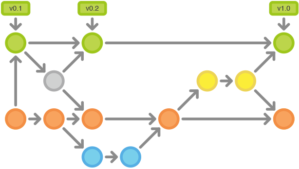
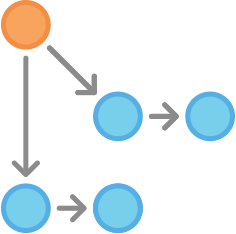

Git基本命令和GitFlow工作流¶
git 团队协作的一些命令¶
- 开分支
git branch 新分支名 例如，在master分支下，新开一个开发分支： git branch dev - 切换到新分支
git checkout 分支名 例如，在master分支下，切换到新开的dev： git checkout dev - 开分支和切换分支合并到一个命令
git checkout -b 新分支名 例如，新开一个开发分支，并立即切换到该分支： git checkout -b dev - 切换回原分支
git checkout 原分支名 例如，切换回master git checkout master 注意：当前分支有修改，还未commit的时候，会切换失败，应当先commit，但可以不用push - 合并分支
git merge 需要合并的分支名 例如，刚刚已经切换回master，现在需要合并dev的内容： git merge dev 建议在GitLab(或者其他git系统)上面创建merge request的形式来进行分支的合并和代码审核。 - 查看本地分支列表
git branch -a 前面带remotes/origin 的，是远程分支 - 查看远程分支列表
git branch -r - 向远程提交本地新开的分支
git push origin 新分支名 例如，刚刚在master下新开的dev分支： git push origin dev - 删除远程分支
git push origin :远程分支名 例如，删除刚刚提交到远程的dev分支： git push origin :dev - 删除本地分支
git branch 分支名称 -d 例如，在master分支下，删除新开的dev分支： git branch dev -d 注意：如果dev的更改，push到远程，在GitLab(或者其他git系统)上面进行了merge操作，但是本地master没有pull最新的代码，会删除不成功，可以先git pull origin master，或者强制删除 git branch dev -D - 更新分支列表信息
git fetch -p - TortoiseGit(乌龟git)
不可否认，在windows下，这个是个不错的工具。不管你是命令行新手还是重度使用者，我觉得都可以尝试一下。
Git工作流指南：Gitflow工作流¶
在你开始阅读之前，请记住：流程应被视作为指导方针，而非“铁律”。我们只是想告诉你可能的做法。因此，如果有必要的话，你可以组合使用不同的流程

Gitflow工作流定义了一个围绕项目发布的严格分支模型。虽然比功能分支工作流复杂几分，但提供了用于一个健壮的用于管理大型项目的框架。 Gitflow工作流没有用超出功能分支工作流的概念和命令，而是为不同的分支分配一个很明确的角色，并定义分支之间如何和什么时候进行交互。除了使用功能分支，在做准备、维护和记录发布也使用各自的分支。当然你可以用上功能分支工作流所有的好处：Pull Requests、隔离实验性开发和更高效的协作。
工作方式¶
Gitflow工作流仍然用中央仓库作为所有开发者的交互中心。和其它的工作流一样，开发者在本地工作并push分支到要中央仓库中。
历史分支¶
相对使用仅有的一个master分支，Gitflow工作流使用2个分支来记录项目的历史。master分支存储了正式发布的历史，而develop分支作为功能的集成分支。这样也方便master分支上的所有提交分配一个版本号。
 剩下要说明的问题围绕着这2个分支的区别展开。
剩下要说明的问题围绕着这2个分支的区别展开。
功能分支¶
每个新功能位于一个自己的分支，这样可以push到中央仓库以备份和协作。但功能分支不是从master分支上拉出新分支，而是使用develop分支作为父分支。当新功能完成时，合并回develop分支。新功能提交应该从不直接与master分支交互。

注意，从各种含义和目的上来看，功能分支加上develop分支就是功能分支工作流的用法。但Gitflow工作流没有在这里止步。
发布分支¶

一旦develop分支上有了做一次发布（或者说快到了既定的发布日）的足够功能，就从develop分支上fork一个发布分支。新建的分支用于开始发布循环，所以从这个时间点开始之后新的功能不能再加到这个分支上 —— 这个分支只应该做Bug修复、文档生成和其它面向发布任务。一旦对外发布的工作都完成了，发布分支合并到master分支并分配一个版本号打好Tag。另外，这些从新建发布分支以来的做的修改要合并回develop分支。 使用一个用于发布准备的专门分支，使得一个团队可以在完善当前的发布版本的同时，另一个团队可以继续开发下个版本的功能。 这也打造定义良好的开发阶段（比如，可以很轻松地说，『这周我们要做准备发布版本4.0』，并且在仓库的目录结构中可以实际看到）。
常用的分支约定：¶
用于新建发布分支的分支: develop
用于合并的分支: master
分支命名: release-* 或 release/*
维护分支¶

维护分支或说是热修复（hotfix）分支用于生成快速给产品发布版本（production releases）打补丁，这是唯一可以直接从master分支fork出来的分支。修复完成，修改应该马上合并回master分支和develop分支（当前的发布分支），master分支应该用新的版本号打好Tag。 为Bug修复使用专门分支，让团队可以处理掉问题而不用打断其它工作或是等待下一个发布循环。你可以把维护分支想成是一个直接在master分支上处理的临时发布。
示例¶
下面的示例演示本工作流如何用于管理单个发布循环。假设你已经创建了一个中央仓库。
创建开发分支¶

第一步为master分支配套一个develop分支。简单来做可以本地创建一个空的develop分支，push到服务器上：
git branch develop
git push -u origin develop
git clone ssh://user@host/path/to/repo.git
git checkout -b develop origin/develop
工程师A和工程师B开始开发新功能¶
 这个示例中，工程师A和工程师B开始各自的功能开发。他们需要为各自的功能创建相应的分支。新分支不是基于master分支，而是应该基于develop分支：
git checkout -b some-feature develop
他们用老套路添加提交到各自功能分支上：编辑、暂存、提交：
git status
git add
git commit
工程师A完成功能开发¶
 添加了提交后，工程师A觉得她的功能OK了。如果团队使用Pull Requests，这时候可以发起一个用于合并到develop分支。否则她可以直接合并到她本地的develop分支后push到中央仓库：
添加了提交后，工程师A觉得她的功能OK了。如果团队使用Pull Requests，这时候可以发起一个用于合并到develop分支。否则她可以直接合并到她本地的develop分支后push到中央仓库：
git pull origin develop
git checkout develop
git merge some-feature
git push
git branch -d some-feature
工程师A开始准备发布¶
这个时候工程师B正在实现他的功能，工程师A开始准备她的第一个项目正式发布。像功能开发一样，她用一个新的分支来做发布准备。这一步也确定了发布的版本号：
git checkout -b release-0.1 develop
只要工程师A创建这个分支并push到中央仓库，这个发布就是功能冻结的。任何不在develop分支中的新功能都推到下个发布循环中。
工程师A完成发布¶
一旦准备好了对外发布，工程师A合并修改到master分支和develop分支上，删除发布分支。合并回develop分支很重要，因为在发布分支中已经提交的更新需要在后面的新功能中也要是可用的。另外，如果工程师A的团队要求Code Review，这是一个发起Pull Request的理想时机。
git checkout master
git merge release-0.1
git push
git checkout develop
git merge release-0.1
git push
git branch -d release-0.1
发布分支是作为功能开发（develop分支）和对外发布（master分支）间的缓冲。只要有合并到master分支，就应该打好Tag以方便跟踪。
git tag -a 0.1 -m "Initial public release" master
git push --tags
最终用户发现Bug¶

对外发布后，工程师A回去和工程师B一起做下个发布的新功能开发，直到有最终用户开了一个Ticket抱怨当前版本的一个Bug。为了处理Bug，工程师A（或工程师B）从master分支上拉出了一个维护分支，提交修改以解决问题，然后直接合并回master分支：
git checkout -b issue-#001 master
git checkout master
git merge issue-#001
git push
git checkout develop
git merge issue-#001
git push
git branch -d issue-#001
最后¶
Git是一个不错的版本管理工具，但也仅仅是工具。记住，这里演示的工作流只是可能用法的例子，而不是在实际工作中使用Git不可违逆的条例。所以不要畏惧按自己需要对工作流的用法做取舍。不变的目标就是让Git为你所用。